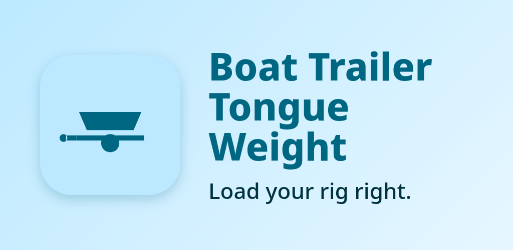
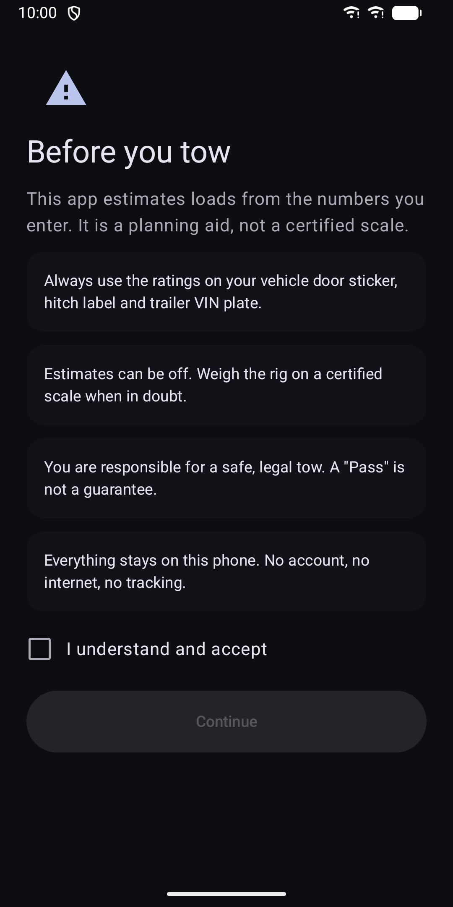
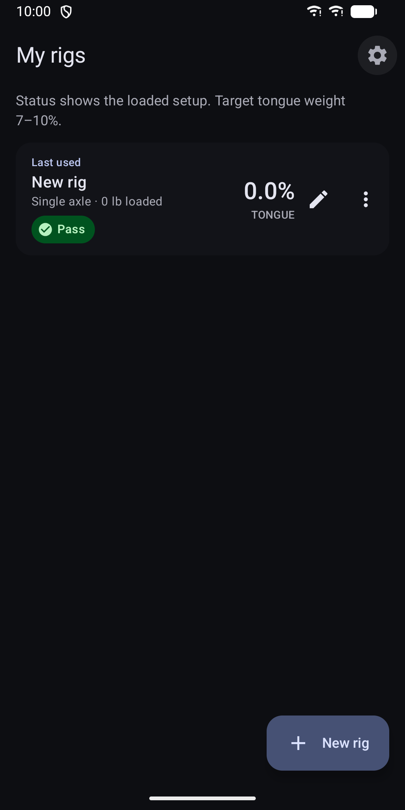
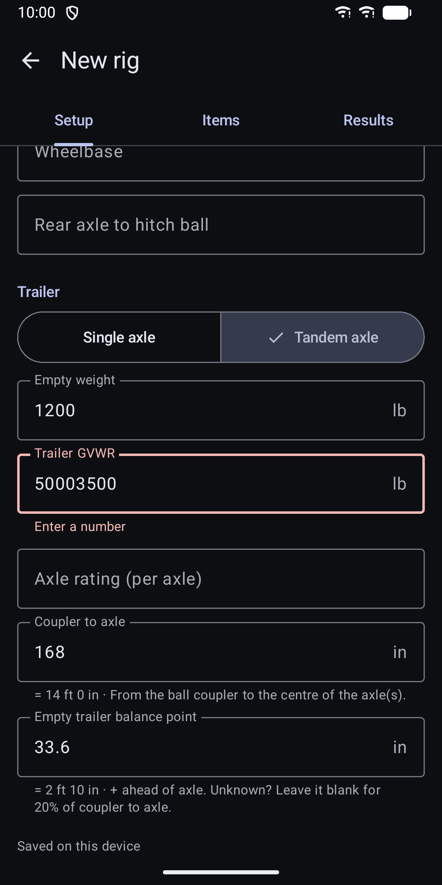
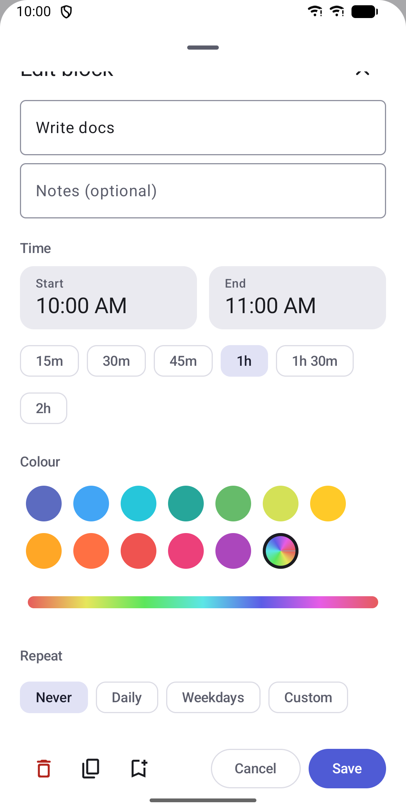
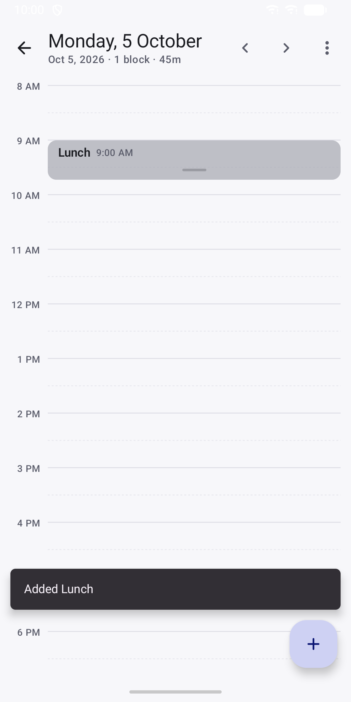
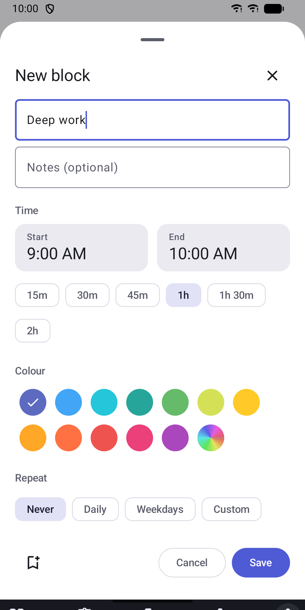

Boat Trailer Tongue Weight
Check tongue weight, axle loads and tow ratings of your boat trailer rig.







About
Check that your boat trailer is loaded right before you leave the ramp. Boat Trailer Tongue Weight treats your tow vehicle, trailer and boat as one rig. Enter the ratings from your door sticker, hitch label and trailer VIN plate, add what sits on the trailer, and see at a glance whether the rig passes. Everything runs on your phone. The app has no internet permission and needs no account. WHAT IT CHECKS - Tongue weight in percent, with 7 to 10 percent as the target - Hitch and receiver maximum tongue weight - Trailer axle load and trailer GVWR - Tow rating, payload, vehicle GVWR and GCWR - Rear axle load (GAWR), when you enter wheelbase and hitch overhang Each check shows Pass, Warn or Fail. The dry trailer and the loaded trailer are shown side by side, so you see what fuel, water and gear change. BUILT FOR THE RAMP - Single-axle and tandem-axle trailers - Load items with weight and position: hull, engine, fuel, livewell or ballast water, gear - Fuel and water tanks with a level slider. The weight follows from tank size and level. - Presets for outboard engines from 2.5 to 350 HP and for common gear - Hints for reaching 7 to 10 percent: drain the livewell, move the boat forward on the trailer, move gear or move the axle - Unlimited saved rigs. Edit, duplicate or delete any rig from the list. - PDF summary of a rig to save or share - Home screen widget for your last-used rig - Imperial or metric units - Light and dark theme, phone and tablet layouts, screen reader labels and large touch targets HOW THE TONGUE WEIGHT IS FOUND The app estimates tongue weight from the weight and position of each item relative to the axle. It does not measure anything. The results are only as good as the weights and distances you enter. PRIVACY The app has no internet permission, no account, no ads and no analytics. Your rigs stay on your phone and are not included in cloud backup. A PDF leaves the phone only when you share or save it. PURCHASE The app is a paid download. Every feature is included after that: unlimited rigs, all presets, PDF export and the widget. There are no in-app purchases and no subscription. SAFETY This app estimates loads from the numbers you enter. It is a planning aid, not a certified scale. Always follow the ratings of your vehicle, hitch and trailer, and weigh your rig on a certified scale when in doubt. You are responsible for a safe and legal tow.